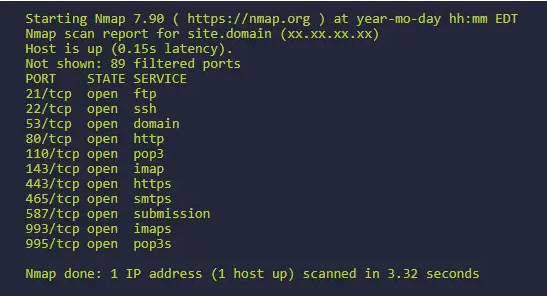
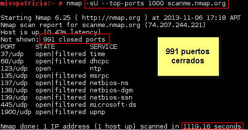
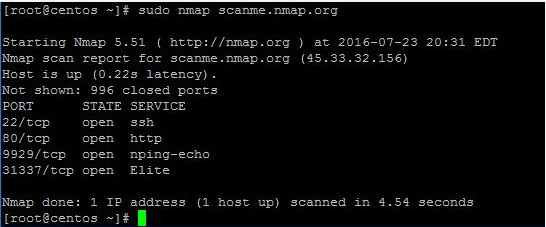

Algunos de los ejemplos más comunes de ciberdelincuencia con los que nos podemos ver afectados son, por ejemplo, los robos de datos personales, acceso a nuestros datos y cuentas bancarias, chantajes a través de información personal, mensajes de spam y fraudes por correo electrónico o mensajes de texto.
Uno de los principales motivos de este aumento en ciberdelincuencia es que el ciberdelito es mucho más barato que los delitos convencionales, el narcotráfico o el tráfico de armas son mucho más caros de llevar a cabo. Des de INCIBE, preocupa la cantidad de empresas que no saben cuál es su nivel de ciberseguridad.
Las mentes detrás de los delitos informáticos, son llamados comúnmente “Ciberdelincuentes”. Para definir este término, podríamos decir que un Ciberdelincuente es toda persona que realiza actividades delictivas en internet, como la apropiación ilegítima de información, el acceder a redes privadas, estafas y engaños.
La captura de ciberdelincuentes puede llevarse a cabo mediante el trabajo conjunto de fuerzas de seguridad, investigación digital, análisis forense, cooperación internacional y la aplicación de leyes y regulaciones relacionadas con el delito cibernético.
Los ciberdelincuentes pueden tener diversas motivaciones, que incluyen obtener ganancias financieras, acceder a información confidencial, causar daño o interrupción, espionaje, sabotaje, robo de identidad, entre otros.
La Deep Web es la parte de Internet que no está indexada por los motores de búsqueda convencionales y no es de acceso público. Por otro lado, la Dark Web es una parte de la Deep Web que se refiere específicamente a sitios web y servicios en línea que operan en redes anónimas y suelen ser utilizados para actividades ilegales.
Las capas del modelo OSI implementadas por el sistema operativo (software) son:
Las capas del modelo OSI implementadas por el hardware son:
NMap es una herramienta de código abierto utilizada para el escaneo de redes y la detección de hosts y servicios. Permite descubrir dispositivos conectados a la red, obtener información sobre los puertos abiertos y los servicios en ejecución, y realizar diversas tareas de exploración y auditoría.
Aquí tienes una captura de pantalla de NMap en acción:
El escaneo ARP (Address Resolution Protocol) es una técnica utilizada para descubrir y mapear las direcciones IP con las direcciones MAC en una red local. Funciona enviando solicitudes ARP para obtener respuestas de los dispositivos conectados a la red y así construir una tabla ARP que relaciona las direcciones IP con las direcciones MAC correspondientes.
El escaneo de puertos es un proceso mediante el cual se analizan los puertos de un sistema o dispositivo en una red para determinar qué servicios o aplicaciones están escuchando en esos puertos. Esto permite identificar puertos abiertos, cerrados o filtrados, lo que puede ayudar a evaluar la seguridad de un sistema y detectar posibles vulnerabilidades.
El escaneo de puertos TCP implica enviar paquetes TCP a través de diferentes puertos de un sistema o dispositivo para detectar cuáles están abiertos y son accesibles. El escaneo puede realizarse de manera secuencial, en paralelo o mediante técnicas más avanzadas como el escaneo SYN, el escaneo ACK, el escaneo FIN, entre otros. Aquí tienes una captura de pantalla que muestra el escaneo de puertos TCP realizado con la herramienta Nmap:
El escaneo de puertos UDP implica enviar paquetes UDP a través de diferentes puertos de un sistema o dispositivo para determinar cuáles están abiertos y son accesibles. A diferencia del escaneo de puertos TCP, no se establece una conexión directa con los puertos UDP, por lo que el escaneo se basa en la respuesta o falta de respuesta del puerto. Aquí tienes una captura de pantalla que muestra el escaneo de puertos UDP realizado con la herramienta Nmap:
Algunos de los principales tipos de ataques de red incluyen:
Las vulnerabilidades IDOR (Insecure Direct Object References) son una clase de vulnerabilidades en aplicaciones web que ocurren cuando un identificador interno, como un número o un nombre, es utilizado para acceder directamente a un recurso o dato sin verificar adecuadamente si el usuario tiene los permisos necesarios. Esto puede permitir a un atacante acceder, modificar o eliminar información confidencial o privada.
El SQL injection es una técnica de ataque utilizada en aplicaciones web que aprovecha las vulnerabilidades de seguridad en las consultas SQL. Consiste en insertar código SQL malicioso en los campos de entrada de una aplicación para manipular las consultas SQL y obtener acceso no autorizado a la base de datos subyacente. Esto puede permitir al atacante extraer información confidencial, modificar datos o incluso ejecutar comandos arbitrarios en el servidor de la base de datos.
El ataque XSS (Cross-Site Scripting) es un tipo de ataque que aprovecha las vulnerabilidades en aplicaciones web para insertar y ejecutar scripts maliciosos en los navegadores de los usuarios. Estos scripts pueden ser utilizados para robar información sensible, redirigir a los usuarios a sitios falsos, realizar acciones no autorizadas en nombre del usuario, entre otros. Los ataques XSS pueden ser de tipo almacenado, reflejado o basado en DOM, dependiendo de cómo se entregue el script malicioso al usuario.
Para proteger una red Wi-Fi, se pueden seguir las siguientes medidas de seguridad:
Los hackeos por ingeniería social implican la manipulación psicológica de las personas para obtener información confidencial o realizar acciones no autorizadas. Los atacantes utilizan técnicas como el phishing, el pretexting, el baiting, la suplantación de identidad, entre otras, para engañar a las personas y hacer que revelen información sensible, como contraseñas o datos de acceso, o realicen acciones que benefician al atacante. La ingeniería social se basa en explotar la confianza, la curiosidad, el miedo o la falta de conocimiento de las personas.
La autenticación multifactor (MFA) es un método de seguridad que requiere que los usuarios proporcionen múltiples factores de autenticación para verificar su identidad. Estos factores pueden ser algo que el usuario sabe (contraseña), algo que el usuario tiene (token, tarjeta inteligente) y algo que el usuario es (huella dactilar, reconocimiento facial). Al utilizar varios factores, se agrega una capa adicional de seguridad y hace que sea más difícil para un atacante comprometer una cuenta incluso si obtiene acceso a un factor de autenticación.
El Credential Stuffing es una técnica utilizada por los atacantes para comprometer cuentas en línea. Consiste en utilizar combinaciones de nombres de usuario y contraseñas filtradas de violaciones de datos en otros servicios y probar esas combinaciones en diferentes sitios web o aplicaciones. El objetivo es aprovechar el hecho de que muchas personas reutilizan las mismas credenciales en múltiples servicios, lo que permite a los atacantes obtener acceso no autorizado a las cuentas de las víctimas.